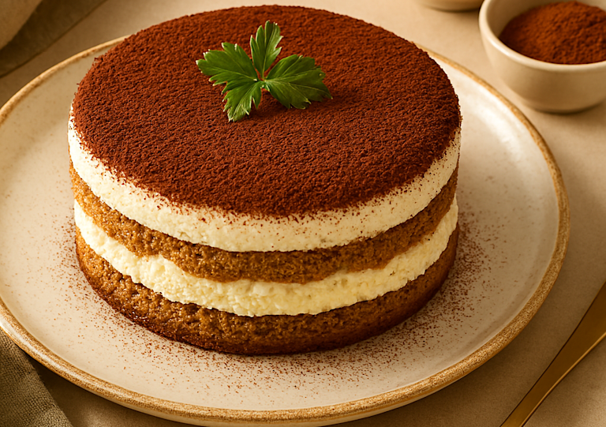

Accueil
Tiramisu

Description
Le tiramisu est un dessert italien composé de biscuits imbibés de café, de crème au mascarpone et de cacao.
Ce dessert sans cuisson se prépare la veille pour laisser les saveurs se développer au réfrigérateur.
Ingrédients
- 250 g de mascarpone
- 3 œufs
- 80 g de sucre
- 24 biscuits à la cuillère
- 30 cl de café fort refroidi
- Cacao en poudre non sucré
Étapes
- Séparer les blancs des jaunes d'œufs.
- Fouetter les jaunes avec le sucre jusqu'à ce que le mélange blanchisse.
- Ajouter le mascarpone et mélanger jusqu'à obtenir une crème lisse.
- Monter les blancs en neige ferme, puis les incorporer délicatement à la préparation.
- Tremper rapidement chaque biscuit dans le café et tapisser le fond d'un plat.
- Recouvrir d'une couche de crème au mascarpone.
- Répéter l'opération pour former une seconde couche de biscuits et de crème.
- Réfrigérer au moins 4 heures, idéalement toute une nuit.
- Saupoudrer de cacao juste avant de servir.